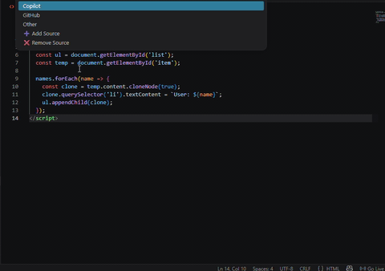
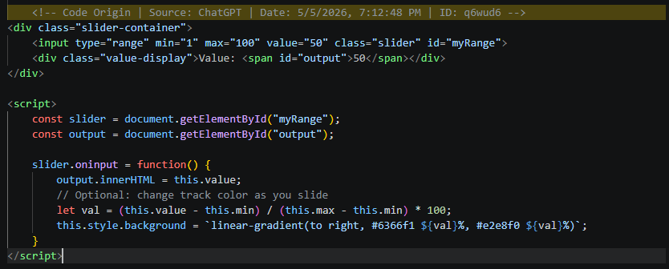
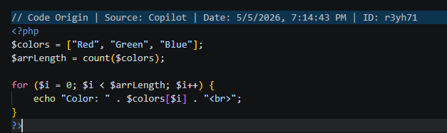
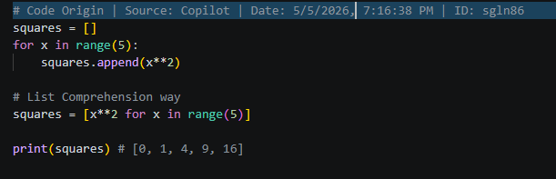
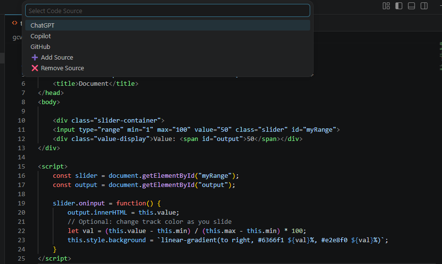
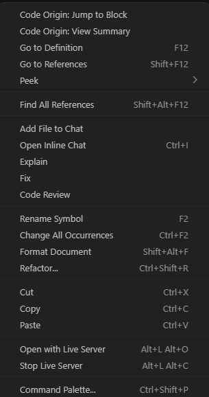

VsCode Extension
“Track AI, GitHub, and copied code sources directly inside VS Code — avoid bugs, confusion, and legal risk.”
Modern developers often copy code from:
But later...
Keeps source context inside your code — clean, simple, and automatic.
Add Code Origin Extension in your Vscode ( Code editor )
Paste code from any source like ChatGPT or StackOverflow.
Extension automatically open Quick Pick to select the source of the code.
Right Click view summary on terminal code source anytime.
Detects pasted code instantly inside VsCode Editor and tracks its origin automatically.
Shows how much code is AI-generated vs manual with clean insights.
Auto formats comments based on language like JS, Python, HTML, etc.
Code Origin is a Vscode extension that helps developers track where their code comes from. Whether it's from AI tools, StackOverflow, or manually written — everything is clearly marked.
No more confusion. No more messy code history. Just clean, trackable development.
Track where your code comes from
Auto detects pasted code and tags its source instantly.
Shows AI vs manual code clearly inside your file.
Automatically formats comments based on language.
Automatically formats comments based on language.






No need to remember where code came from — it's tracked automatically.
Clearly see which parts are AI-generated and which are yours.
Structured comments keep your code readable and organized.
Focus and Boost on building, not tracking sources manually.